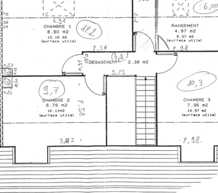
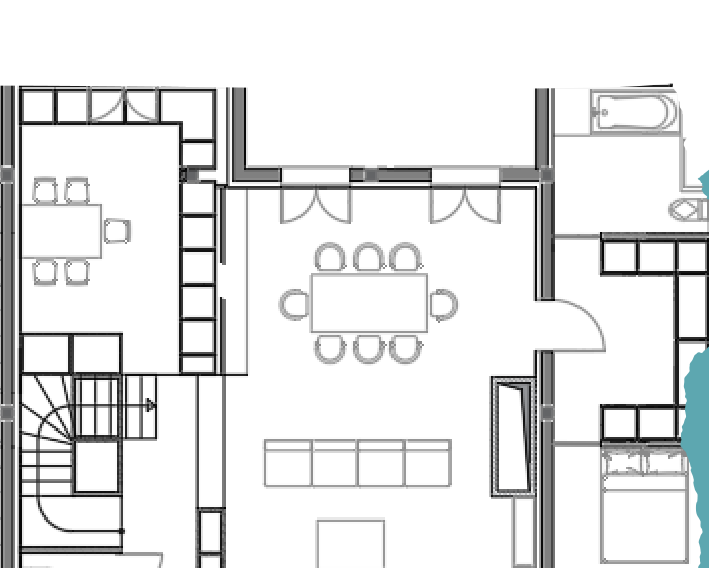
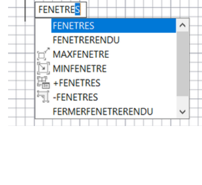

Portfolio CAO / DAO — Étude de cas
Étude de cas — rapport de stage
Stage de deux mois chez un architecte indépendant, en fin de formation de dessinateur de projet (AFPA Paris 12).
Contexte
Le stage s'est déroulé sur deux mois, en fin de formation intensive d'un an de dessinateur de projet (AFPA Paris 12), chez un architecte indépendant. La demande portait sur la reprise de plans existants et sur la production des pièces graphiques d'un projet de maison individuelle : redessiner sous AutoCAD d'anciens plans d'architecte, mener l'étude jusqu'à l'avant-projet, puis préparer les pièces du permis de construire.
Les plans reçus étaient anciens : une partie des modifications de façade et d'intérieur n'y figurait pas, certaines cotations étaient erronées et les cotes des nouvelles parties étaient absentes. Le travail a donc commencé par un contrôle critique des documents existants.
Méthode
- Reprise des plans reçus. Lecture et vérification des plans d'architecte existants, repérage des informations manquantes et des modifications non reportées (façades et intérieur), recherche par correspondance des cotations absentes.
- Dessin assisté par ordinateur (DAO). Transposition des plans sous AutoCAD : calques, gabarits, cotation et habillage de plan, avec les cotes reconstituées.
- Conception assistée (CAO) et avant-projet. Étude des niveaux, implantation des ouvertures et des lucarnes, études de hauteur sous plafond pour l'aménagement intérieur, en tenant compte de la pente de toit.
- Aménagement intérieur. Répartition des chambres et des salles de bains, implantation des placards et des équipements sanitaires, vérification des circulations et des largeurs de passage.
- Sortie graphique. Constitution des feuilles du permis de construire (séries PC 1 à PC 8) : situation, masse, niveaux, élévations, perspective d'insertion et environnement. 29 feuilles préparées, avec les doublons nécessaires aux feuilles d'existant, de démolition et de projet — réglage des présentations et de la transparence du tracé sous AutoCAD.
- Contrôle. Vérification des cotations et des renvois entre feuilles avant remise.
Résultat
Extraits du rapport de stage : lecture du plan de niveau, aménagement intérieur et préparation des présentations sous AutoCAD.



| Série | Contenu |
|---|---|
| PC 1 | Plan de situation |
| PC 2 | Plan de masse : existant, démolition, projet |
| PC 3 | Plans de niveau : RDC, R+1, R+2 (existant et projet) |
| PC 5 | Élévations Nord et Sud : existant, démolition, projet et cabanon |
| PC 6 | Perspective d'insertion |
| PC 7 | Environnement proche |
| PC 8 | Environnement lointain |
Ce que cela démontre
Lecture critique de plans reçus, repérage des incohérences de cotation et reconstitution des données manquantes. Production d'un dossier graphique complet sous AutoCAD, de la phase DAO aux pièces d'un permis de construire, avec hiérarchie des feuilles, habillage et contrôle documentaire.
Le rapport de stage complet
Le rapport de stage est proposé au téléchargement, expurgé de toute donnée nominative. Rédigé en 2022, il constitue la base de connaissances en dessin technique ; l'expérience acquise depuis — notamment au sein de la Ville de Montreuil (2022-2023) et sur d'autres projets — a nettement consolidé la maîtrise des outils et des procédés.